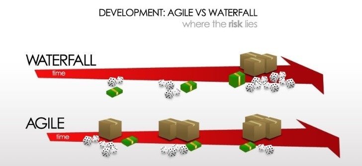
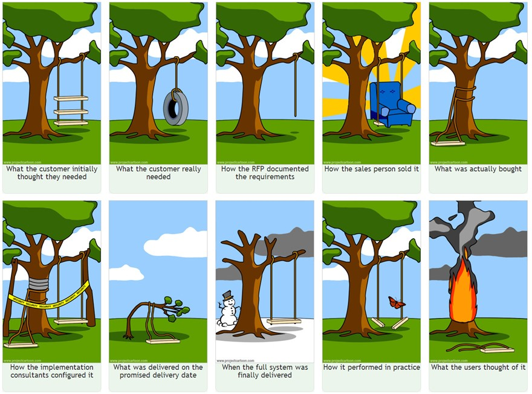
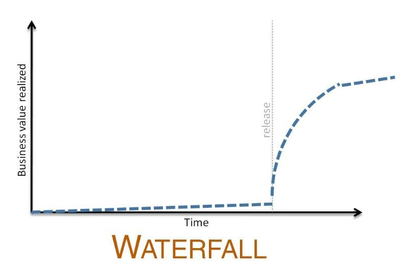
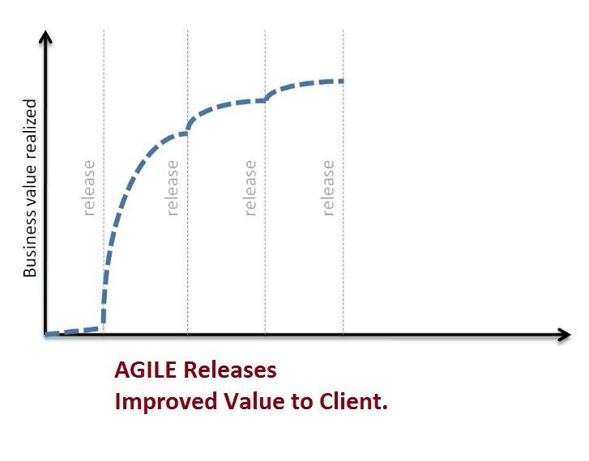
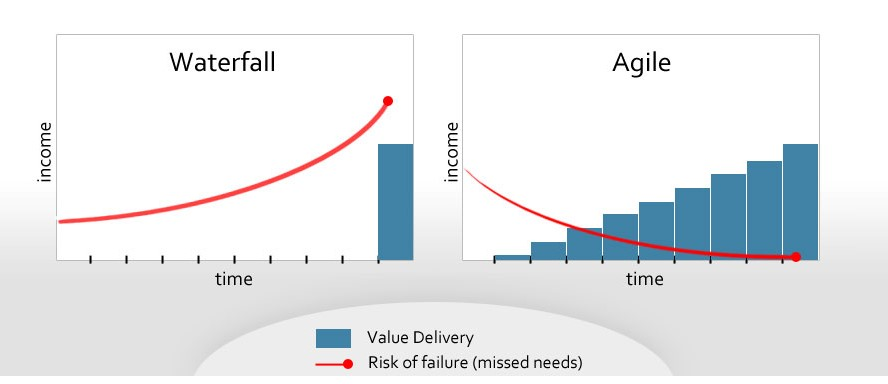

Never Stop LEARNING...
Hey Friends, Thanks for visiting vnvinfo.net!
[PREVIOUS ARTICLE]Importance of Agile: PART-I (Clients)
Published On: Oct 26, 2016.Article Length: 225 words.
Reading time: 2~3 minutes.
Agile and Waterfall Approach in a nutshell:

Let us review the benefits of AGILE over WATERFALL:
- Improved Customer Satisfaction:
WATERFALL: In waterfall approach client gets application after the end of development cycle. For example-Client submits his requirement in 2016, and product delivered in 2018 (Single Release). Client doesn’t get what he desired.
AGILE: Agile manifesto says – Customer Collaboration and Respond to Change is more important than Contract Negotiation and Following a PLAN. Therefore in Agile Approach we deliver what client really want.
This image shows the trouble in Waterfall approach-

- Realization of Business Value:
WATERFALL Client reap the value after the development cycle ends.
AGILE: Client start realizing business value soon after sprint 1 (Spring cycle is roughly 2~4 weeks).


- Risk Factor: In former (Waterfall)
approach risk becomes higher whereas in latter (Agile) approach risk expectancy goes down
as application gets closer to final deployment.

So what you’re going to choose – WATERFALL OR AGILE? Read on..
Points to Remember-
- Even though WATERFALL OR AGILE seems mutually exclusive approaches (i.e. using one approach excludes other). In fact they’re not. SURPRISED? These two approaches shall be blend together in a single project. I’m going to write another article on this topic.
- There are some industries where WATERFALL will keep dominating. For example - real estate industry and large scale government projects. We need to plan everything upfront before initiating any construction or government project.
- Waterfall inherently being used within sprint itself.
Note: Based on feedback from readers, I keep my articles short and crisp, i.e. less than 500 (English) words.
Reading time: 3~4 minutes.
Feel free to reach me at:
Email: kaushiknt@yahoo.com
WeChat: kklove0604
[PREVIOUS ARTICLE]